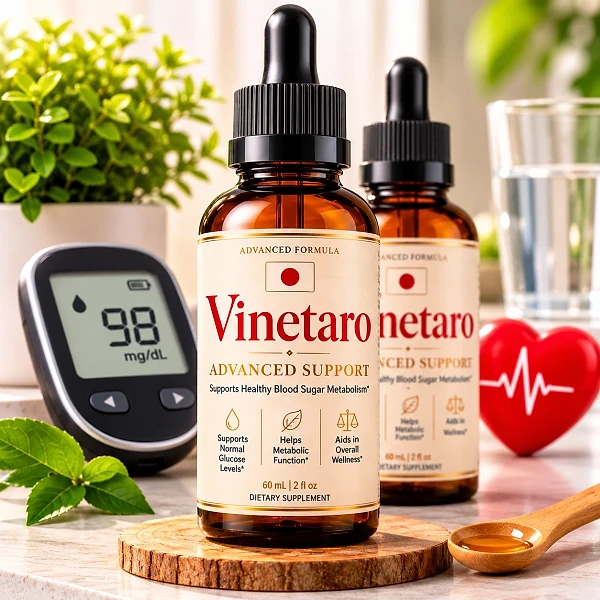
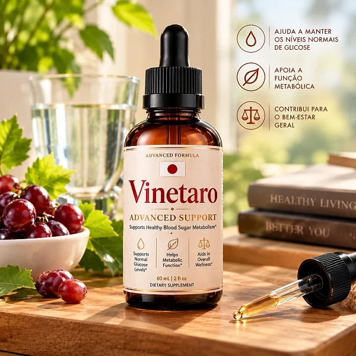
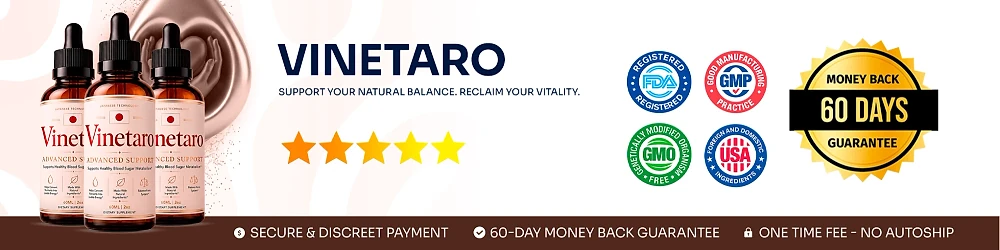

What Is Vinetaro And How Does It Work?
Vinetaro is a dietary supplement in liquid dropper form, labeled "Advanced Support" and "Supports Healthy Blood Sugar Metabolism". According to the official website, it is developed for oral use and marketed to provide nutritional support for glucose metabolism, metabolic health, and weight management.
The formula pairs one mineral with a long list of botanicals and amino acids. The label shows Chromium (as chromium picolinate) and a 200 mg proprietary blend that includes Gymnema, African Mango, Green Tea, Maca, Panax Ginseng, Grape Seed, Guarana, Eleuthero, Astragalus, Coleus Forskohlii, and several amino acids such as L-Tyrosine, L-Carnitine, and GABA.
How is it meant to work? The official website highlights six of these ingredients and explains its idea in three parts: Chromium Picolinate to support the body's response to insulin, Gymnema and African Mango to help with how sugar is absorbed and processed, and adaptogens such as Maca and Panax Ginseng to support energy and resilience to everyday stress.
Several of these ingredients are well known in blood sugar formulas. Chromium contributes to normal macronutrient metabolism, Gymnema is traditionally used in Ayurveda for sweet cravings, and Green Tea provides catechins that have been studied for metabolism. The website also shows a list of scientific references, while noting that the company is not endorsed by those organizations.
Results are not guaranteed. The official disclaimer states that testimonials may not reflect the typical buyer's experience, and the label is clear that the product is not intended to diagnose, treat, cure, or prevent any disease.
Each bottle contains 60 ml (2 fl oz), which the label lists as 60 servings of 1 ml. Vinetaro is distributed by Instituto Experience in Lakeland, Florida, and the label says it is made in the USA with globally sourced ingredients in an FDA-registered facility.
Vinetaro is a dietary supplement. It does not replace a balanced diet, physical activity, prescribed treatment, or advice from your doctor.
Vinetaro Ingredients
The official website shows the full Supplement Facts panel, so buyers can review the formula before ordering. One serving (1 ml) provides:
Chromium Picolinate (0.7 mcg, 2% DV): a trace mineral involved in normal macronutrient metabolism and the body's response to insulin.
Gymnema Leaf Extract: an Ayurvedic herb traditionally linked to healthy blood sugar and fewer cravings for sweets.
African Mango Seed Extract: a botanical studied for metabolism and weight management.
Green Tea Leaf Extract: a source of catechins and natural caffeine, often used for metabolic support.
Maca Root and Panax Ginseng: traditional adaptogens used for steady energy and stress resilience.
Amino acids: L-Glutamine, L-Tyrosine, L-Arginine, Beta-Alanine, GABA, L-Ornithine, L-Tryptophan, and L-Carnitine.
The blend also contains Grape Seed, Guarana, Eleuthero, Astragalus, Coleus Forskohlii, Capsicum, Grapefruit, Raspberry Ketones, and Monoammonium Glycyrrhizinate (from licorice), for a total of 200 mg per serving, so the individual amount of each ingredient is not disclosed. The liquid base is glycerin, water, organic lemon extract, stevia, xylitol, sodium benzoate, potassium sorbate, citric acid, and natural flavors. Stevia and xylitol give the drops a sweet taste without added sugar.
Vinetaro Side Effects
According to the official FAQ, no significant side effects have been reported by users, and the brand describes the ingredients as naturally derived and tested for quality and safety. The same FAQ recommends showing the label to your doctor before starting if you are pregnant, nursing, under 18, or have a known medical condition.
The label adds clear cautions: do not exceed the recommended dose. Pregnant or nursing mothers, children under 18, and anyone with a known medical condition should consult a physician before using it. Keep it out of reach of children and do not use it if the safety seal is damaged or missing.
There is one point worth knowing. The FAQ says the formula has no artificial stimulants, yet the label includes Guarana and Green Tea, both natural sources of caffeine. People who are sensitive to caffeine, or who take medication for blood pressure, the heart, anxiety, or sleep, should check with a doctor first.
Because Chromium and Gymnema are traditionally linked to blood sugar, anyone who takes medication for glucose control should seek medical advice before adding Vinetaro, as the FAQ itself recommends. Grapefruit can interact with some prescription drugs. If you notice any discomfort or unusual reaction, stop using the product and speak with a healthcare professional.
Vinetaro Dosage
The suggested use on the label is simple: shake well before each use, then take 1 or 2 droppers full daily, placing the liquid in your mouth and swallowing. The label lists the serving as 1 ml, and each bottle holds 60 servings.
The official FAQ adds a practical tip: for best results, take it in the morning, preferably before a meal. The liquid form means there are no capsules to swallow, and keeping the same moment every day makes the habit easier to maintain.
The label states plainly: do not exceed the recommended dose. Because the formula contains natural caffeine from Guarana and Green Tea, the morning routine suggested by the brand may also be more comfortable for people who are sensitive to caffeine at night.
The official website does not promise a specific timeline, and its disclaimer says individual results vary. A dropper supplement works best alongside balanced meals, regular physical activity, good sleep, enough water, and any plan agreed with your doctor.
Store the bottle in a cool, dry place, away from heat, light, and humidity, to preserve freshness. If you take medication or have a medical condition, ask your healthcare provider before starting Vinetaro.
Vinetaro – Refund Policy
Vinetaro is covered by a 60-Day Money Back Guarantee, counted from the date of purchase, according to the official website. The FAQ describes it as unconditional, while the refund policy page lists specific rules, so it is worth reading both before ordering.
Minimum trial: the policy asks you to use the product for at least 30 days and to begin the return process within 60 days of your purchase date.
Step 1 – Request the authorization code: email the support team at contact@customercs.com, the address shown on the website and on the label. The label also lists the phone number +1 (507) 448-8190.
Step 2 – Return the bottles: the policy says only sealed bottles are eligible for a refund, return shipping is the customer's responsibility, and the original shipping or customs costs are not refunded. A 20% restocking fee is deducted from the refund amount.
Step 3 – Refund: once the returned items are received and verified, the refund goes to the original payment method, and banks may need 5 to 10 business days to show it. You receive a confirmation email when the process is complete.
Orders are processed by BuyGoods. Read the full policy on the official website before ordering, as its terms are stricter than the FAQ summary.
Vinetaro Customer Reviews
-
Michael Thompson — Houston, TexasVerified Purchase – 6 Bottles
“If it wasn't for Vinetaro, I'd still be struggling with my blood sugar levels... and even considering more drastic measures... But thank goodness I didn't have to do any of that, because just two weeks into taking Vinetaro, I began to see my glucose readings stabilize and my energy levels soar...”
-
Sarah Rodriguez — Chicago, IllinoisVerified Purchase – 6 Bottles
“I was totally discouraged..., dealing with constant blood sugar spikes and feeling tired all the time. It got to the point where I was afraid to enjoy a meal. But then I started on Vinetaro, and day by day, my glucose levels became more balanced... I even noticed my cravings diminishing, without those sudden urges for sweets I've been battling... And I swear, it felt like I regained control of my health in just 3 weeks!”
-
Lauren Rio — Seattle, WashingtonVerified Purchase – 6 Bottles
“I was about to give up on finding something that actually worked..., and then Vinetaro showed up... Oh, what a relief!!! My blood sugar readings are now consistently in the healthy range, and I feel so much more energetic. I can hardly believe it, it's truly life-changing.”
Vinetaro – Where To Buy
Vinetaro is sold through its official website, and orders are processed by BuyGoods, the retailer named on the checkout. The official website does not point buyers to Amazon, eBay, Walmart, or any other marketplace.
Bottles sold by unknown third parties may look the same, but there is no way to confirm their origin or how they were stored, which raises real concerns about quality and safety. Purchases made outside the official source may not be covered by the 60-Day Money Back Guarantee.
That is why most buyers prefer to order Vinetaro directly from the official website. Going to the source means getting the authentic original product, with access to the support team and the full guarantee.
Before completing your order, make sure you are on the official Vinetaro website to avoid counterfeit products. Checking the address before you pay, and seeing BuyGoods named at checkout, takes only a moment and helps protect your order.
To ensure you’re getting the authentic product, most users choose to visit the official website.
Is Vinetaro A Scam?
Based on the official website, Vinetaro does not appear to be a scam. It is a real dietary supplement in liquid form, sold through BuyGoods, an established retailer, and designed to support healthy blood sugar metabolism, energy, and metabolic health with regular use.
The website publishes the full label with every ingredient, a support email, a refund policy with clear steps, a list of scientific references, and the name and city of the distributor. The label adds a phone number and states that the product is made in an FDA-registered facility.
There are inconsistencies to keep in mind. The sales page speaks of "6 vital nutrients", while the label lists Chromium plus 22 blend ingredients sharing only 200 mg. The FAQ mentions no artificial stimulants, but Guarana and Green Tea contain caffeine. The FAQ calls the guarantee unconditional, while the policy limits refunds to sealed bottles with a 20% restocking fee, and that policy page even mentions blood pressure and circulation, which seems to come from another product.
The sales page also uses bold language about managing blood sugar conditions, countdown timers, and "while supplies last" messages. Treat those as marketing, and judge the product by its label and policies.
For adults who want a simple daily dropper with ingredients traditionally used for glucose metabolism, energy, and metabolic support, Vinetaro may be worth considering, ideally ordered from the official website and discussed with a doctor, especially if you take medication for blood sugar or are sensitive to caffeine.
For those who want to verify product details or check current availability, the official Vinetaro website remains the safest option.

Check Availability On Official Website
